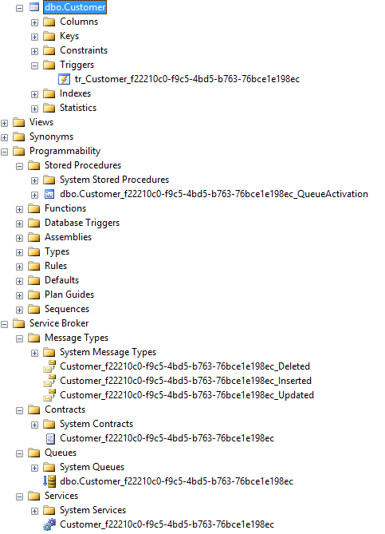

SQL Server table change monitor infrastructure
Basically, the main difference is that SqlTableDependency send events containing values for the table record inserted, changed or deleted, as well as the DML operation (insert/delete/update) about table change: SqlDepenency doesn't tell what data was changed on the database table, they only say that something has changed.
SqlTableDependency instead returns you updated record table change values.
So, once a record changed happens, SqlTableDependency's event subscribers are immediatelly notified with new table values, avoiding you to execute a further select to update your application data.
So, instead of executing a request from client to the server application, and then the server application to the database, we are doing the reverse: sending a request from database to server application, and in turn from server application to clients.
Notifications due to table record change are achieved thanks to the following database infrastructure build at runtime from SqlTableDependency.
Assuming we want monitor Customer table chnges, once SqlTableDependency starts, the following database objects are created:
Final result of this audit table change infrastructure is:

It is a good practice is to wrap SqlTableDependency within a using statement or, alternatively, call the Stop() method once we do not need any more notifications.
So, when the application will not disconnect abruptly, this approach is enough to remove the SqlTableDependency infrastructure (Trigger, Service Broker service, the queue, Contract, Messages type and Stored Procedure).
However, when the application exits abruptly – that is not calling the Stop() method or not implementing the using statement - we need a way for cleaning up the SqlTableDependency infrastructure.
The Start() method, has watchDogTimeOut optional parameter used to remove all the database objects. Its default value is 180 seconds: after this amount of time, if there are no listeners waiting for notifications, the SqlTableDependency infrastructure will be automatically removed.
Query notifications are designed for data that does not change frequently. They are also best used in server-side applications rather than client-side applications. Remember that each request for a notification is registered in SQL Server. If thousands of client applications each request a notification, this can create a scalability problem on your database server. Microsoft's recommendation is that for client-side applications, you should limit the use of query notifications to no more than ten concurrent users.
For large-scale applications, query notifications can be a powerful addition to meet high load demands. Imagine a large-scale website that provides online information to thousands or even millions of users. Rather than having each user's update trigger yet another query on the server to see which information is available, the query can be cached, and matching queries can be served directly from the cache.
On a smaller scale, drop-down lists are another typical set of data that is requested frequently but not updated often. Product lists, state lists, country lists, vendors, salespeople, and other information that changes at a much lower frequency than it is requested are great candidates for notifications.